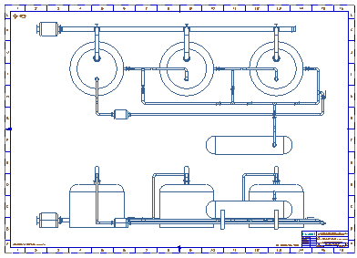
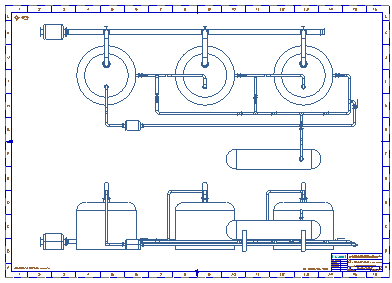

大型装配图纸
使用典型制图方法创建大型装配图纸非常占用资源。关联注释和隐藏线视图的渲染和更新要求将所有相关组件完全加载到会话中。这样会大大增加对内存和管理图纸所需的处理资源的需求。
NX 提供的各种技术可提高此处理过程的效率。通过限制需要加载到会话中的部件数据量，您可以提高系统性能，减少创建和更新大型装配图纸及其成员视图所需的时间。


使用典型制图方法创建大型装配图纸非常占用资源。关联注释和隐藏线视图的渲染和更新要求将所有相关组件完全加载到会话中。这样会大大增加对内存和管理图纸所需的处理资源的需求。
NX 提供的各种技术可提高此处理过程的效率。通过限制需要加载到会话中的部件数据量，您可以提高系统性能，减少创建和更新大型装配图纸及其成员视图所需的时间。
